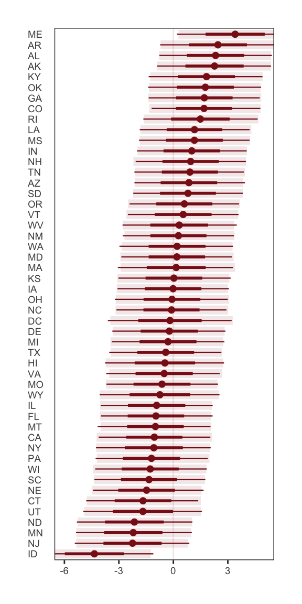
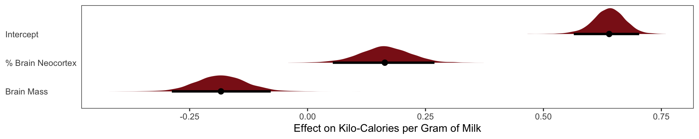
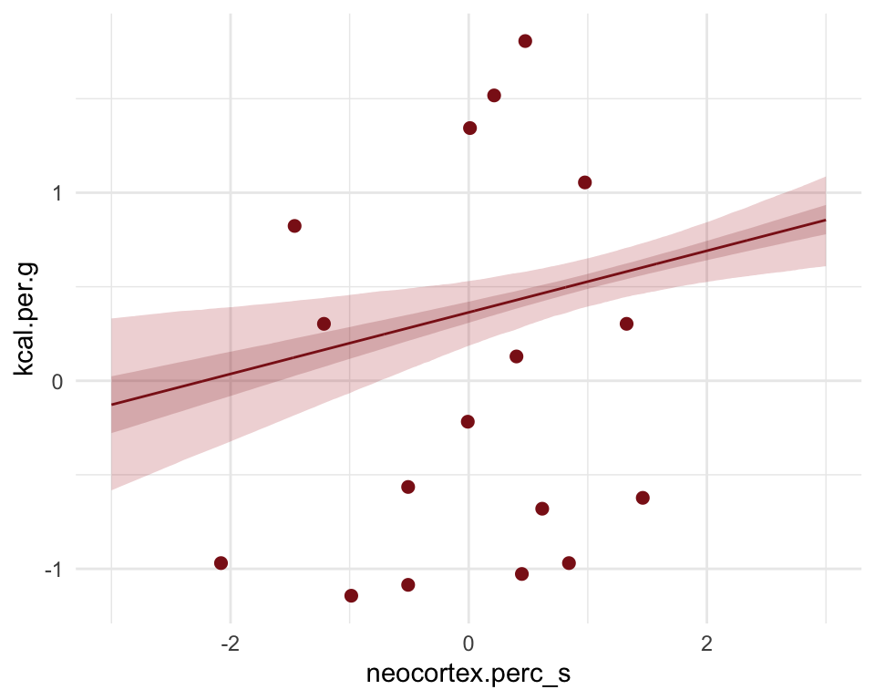

Chapter 5 Multi-variable Regression DAG’s and Causality
Overview
[claude] come up with 3-4 bullet points on what was accomplished in this chapter.
Motivation
[claude] come up with a distrilled paragraph argument for why we should care about muli-variate regression. Here’s a section of Richard McElreath’s text statistical Rethinking
- Statistical “control” for confounds. A confound is something that misleads us about a causal influence—there will be a more precise definition in the next chapter. The spurious waffles and divorce correlation is one possible type of confound, where the confound (southernness) makes a variable with no real importance (Waffle House density) appear to be important. But confounds are diverse. They can hide real important variables just as easily as they can produce false ones.
- Multiple causation. A phenomenon may arise from multiple causes. Measurement of each cause is useful, so when we can use the same data to estimate more than one type of influence, we should. Furthermore, when causation is multiple, one cause can hide another.
- Interactions. The importance of one variable may depend upon another. For ex- ample, plants benefit from both light and water. But in the absence of either, the other is no benefit at all. Such interactions occur very often. Effective inference about one variable will often depend upon consideration of others.
Claude give a quick description of the waffle divorce data set : Data for the individual States of the United States, describing number of Waffle House diners and various marriage and demographic facts.
Format Location : State name Loc : State abbreviation Population : 2010 population in millions MedianAgeMarriage: 2005-2010 median age at marriage Marriage : 2009 marriage rate per 1000 adults Marriage.SE : Standard error of rate Divorce : 2009 divorce rate per 1000 adults Divorce.SE : Standard error of rate WaffleHouses : Number of diners South : 1 indicates Southern State Slaves1860 : Number of slaves in 1860 census Population1860 : Population from 1860 census PropSlaves1860 : Proportion of total population that were slaves in 1860
Most likely a spurious correlation, waffles don’t cause divorces nor vice versa
Spurious Correlation
Problem Intro
Excerpt from Richard McElreath: “Let’s leave waffles behind, at least for the moment. An example that is easier to understand is the correlation between divorce rate and marriage rate (Figure 5.2). The rate at which adults marry is a great predictor of divorce rate, as seen in the left-hand plot in the figure. But does marriage cause divorce? In a trivial sense it obviously does: One cannot get a divorce without first getting married. But there’s no reason high marriage rate must be correlated with divorce.”

We see that Divorce rate is high in the south and low in the north midwest and mid atlantic. Marriage rate is high in

Median Marriage Age Model
\[ \textbf{b5.1} \]
\[ \text{Divorce}_i \sim \text{Intercept} + \beta_1 \text{Median Age Marriage}_i \]

Family: gaussian
Links: mu = identity; sigma = identity
Formula: Divorce ~ 1 + MedianAgeMarriage_s
Data: WaffleDivorce (Number of observations: 50)
Draws: 4 chains, each with iter = 2000; warmup = 500; thin = 1;
total post-warmup draws = 6000
Regression Coefficients:
Estimate Est.Error l-95% CI u-95% CI Rhat Bulk_ESS Tail_ESS
Intercept 9.69 0.22 9.26 10.12 1.00 4663 4042
MedianAgeMarriage_s -1.04 0.21 -1.46 -0.62 1.00 5599 3980
Further Distributional Parameters:
Estimate Est.Error l-95% CI u-95% CI Rhat Bulk_ESS Tail_ESS
sigma 1.51 0.16 1.24 1.85 1.00 5275 4263
Draws were sampled using sample(hmc). For each parameter, Bulk_ESS
and Tail_ESS are effective sample size measures, and Rhat is the potential
scale reduction factor on split chains (at convergence, Rhat = 1).b5.1 <-
brm(data = WaffleDivorce,
family = gaussian,
Divorce ~ 1 + MedianAgeMarriage_s,
prior = c(prior(normal(10, 10), class = Intercept),
prior(normal(0, 1), class = b),
prior(uniform(0, 10), class = sigma, ub = 10)),
iter = 2000, warmup = 500, chains = 4, cores = 4,
seed = 5, backend = "cmdstanr", silent = 2,
file = "fits/b05.01")
The regression of Divorce Rate on Age of Marriage, tells us only that the total influence of age at marriage is strongly negative with divorce rate.
Marriage Rate
\[ \textbf{b5.2} \]
\[ \text{Divorce}_i \sim \text{Intercept} + \beta_1 \text{Marriage % Rate}_i \]

Family: gaussian
Links: mu = identity; sigma = identity
Formula: Divorce ~ 1 + Marriage_s
Data: WaffleDivorce (Number of observations: 50)
Draws: 4 chains, each with iter = 2000; warmup = 500; thin = 1;
total post-warmup draws = 6000
Regression Coefficients:
Estimate Est.Error l-95% CI u-95% CI Rhat Bulk_ESS Tail_ESS
Intercept 9.69 0.25 9.21 10.18 1.00 5774 4384
Marriage_s 0.64 0.24 0.15 1.11 1.00 5742 4259
Further Distributional Parameters:
Estimate Est.Error l-95% CI u-95% CI Rhat Bulk_ESS Tail_ESS
sigma 1.75 0.18 1.44 2.15 1.00 5708 4040
Draws were sampled using sample(hmc). For each parameter, Bulk_ESS
and Tail_ESS are effective sample size measures, and Rhat is the potential
scale reduction factor on split chains (at convergence, Rhat = 1).b5.2 <-
brm(data = WaffleDivorce,
family = gaussian,
Divorce ~ 1 + Marriage_s,
prior = c(prior(normal(10, 10), class = Intercept),
prior(normal(0, 1), class = b),
prior(uniform(0, 10), class = sigma, ub = 10)),
iter = 2000, warmup = 500, chains = 4, cores = 4,
seed = 5, backend = "cmdstanr", silent = 2,
file = "fits/b05.02")
Combined Multi-linear model
\[ \textbf{b5.3} \]
\[ \text{Divorce}_i \sim \text{Intercept} + \beta_1 \text{Marriage % Rate}_i + \beta_2 \text{Median Marriage Age}_i \]

Family: gaussian
Links: mu = identity; sigma = identity
Formula: Divorce ~ 1 + Marriage_s + MedianAgeMarriage_s
Data: WaffleDivorce (Number of observations: 50)
Draws: 4 chains, each with iter = 2000; warmup = 500; thin = 1;
total post-warmup draws = 6000
Regression Coefficients:
Estimate Est.Error l-95% CI u-95% CI Rhat Bulk_ESS Tail_ESS
Intercept 9.68 0.22 9.25 10.11 1.00 6254 4493
Marriage_s -0.12 0.30 -0.71 0.46 1.00 3884 3601
MedianAgeMarriage_s -1.12 0.30 -1.71 -0.53 1.00 3726 3644
Further Distributional Parameters:
Estimate Est.Error l-95% CI u-95% CI Rhat Bulk_ESS Tail_ESS
sigma 1.53 0.17 1.24 1.91 1.00 4836 3480
Draws were sampled using sample(hmc). For each parameter, Bulk_ESS
and Tail_ESS are effective sample size measures, and Rhat is the potential
scale reduction factor on split chains (at convergence, Rhat = 1).b5.3 <- brm(data = WaffleDivorce,
family = gaussian,
Divorce ~ 1 + Marriage_s + MedianAgeMarriage_s,
prior = c(prior(normal(10, 10), class = Intercept),
prior(normal(0, 1), class = b),
prior(uniform(0, 10), class = sigma, ub = 10)),
iter = 2000, warmup = 500, chains = 4, cores = 4,
seed = 5, backend = "cmdstanr", silent = 2,
file = "fits/b05.031")Diagnosing Multi-linear models

Little relationship between divorce and marriage rates, once we have accounted for the effect of Median Marriage Age
Negative relationship between divorce and marriage age, even after we have accounted for the effect of the Marriage % Rate

“This procedure also brings home the message that regression models measure the remaining association of each predictor with the out- come, after already knowing the other predictors. In computing the predictor residual plots, you had to perform those calculations yourself. In the unified multivariate model, it all hap- pens automatically. Nevertheless, it is useful to keep this fact in mind, because regressions can behave in surprising ways as a result.”
Solving the DAG
From McElreath, “Age of marriage influences divorce in two ways. First it can have a direct effect, perhaps because younger people change faster than older people and are therefore more likely to grow incompatible with a partner. Second, it can have an indirect effect by influencing the marriage rate. If people get married earlier, then the marriage rate may rise, because there are more young people. Consider for example if an evil dictator forced everyone to marry at age 65. Since a smaller fraction of the population lives to 65 than to 25, forcing delayed marriage will also reduce the marriage rate. If marriage rate itself has any direct effect on divorce, maybe by making marriage more or less normative, then some of that direct effect could be the indirect effect of age at marriage.”

Once we know median age at marriage for a State, there is little or no additional predictive power in also knowing the rate of marriage in that State.


Masked Relationships
New data set Comparative primate milk composition data, from Table 2 of Hinde and Milligan. 2011. Evolutionary Anthropology 20:9-23.
species: Species name
kcal.per.g: Kilocalories per gram of milk
mass: Body mass of mother, in kilograms
neocortex.perc: Percent of brain mass that is neocortex
Neocortex % Effect on Milk Calories

The posterior mean line is weakly positive, but it is highly imprecise. A lot of mildly positive and negative slopes are plausible, given this model and these data.
Family: gaussian
Links: mu = identity; sigma = identity
Formula: kcal.per.g_s ~ 1 + neocortex.perc_s
Data: milk2 (Number of observations: 17)
Draws: 4 chains, each with iter = 2000; warmup = 500; thin = 1;
total post-warmup draws = 6000
Regression Coefficients:
Estimate Est.Error l-95% CI u-95% CI Rhat Bulk_ESS Tail_ESS
Intercept 0.00 0.16 -0.31 0.30 1.00 4768 3968
neocortex.perc_s 0.12 0.23 -0.34 0.57 1.00 5006 4052
Further Distributional Parameters:
Estimate Est.Error l-95% CI u-95% CI Rhat Bulk_ESS Tail_ESS
sigma 1.04 0.20 0.74 1.50 1.00 4534 3643
Draws were sampled using sample(hmc). For each parameter, Bulk_ESS
and Tail_ESS are effective sample size measures, and Rhat is the potential
scale reduction factor on split chains (at convergence, Rhat = 1).milk.01 <-
brm(data = milk2,
family = gaussian,
kcal.per.g_s ~ 1 + neocortex.perc_s,
prior = c(prior(normal(0, .2), class = Intercept),
prior(normal(0, .5), class = b),
prior(exponential(1), class = sigma)),
iter = 2000, warmup = 500, chains = 4, cores = 4,
seed = 5, backend = "cmdstanr", silent = 2,
file = "fits/milk.01.6")
Mass Effect on Milk Calories
Now consider another predictor variable, adult female body mass, mass in the data frame. Let’s use the logarithm of mass, log(mass), as a predictor as well. Why the logarithm of mass instead of the raw mass in kilograms? It is often true that scaling measurements like body mass are related by magnitudes to other variables. Taking the log of a measure trans- lates the measure into magnitudes. So by using the logarithm of body mass here, we’re saying that we suspect that the magnitude of a mother’s body mass is related to milk energy, in a linear fashion.

The posterior mean line is moderately negative, but it is highly imprecise.
Family: gaussian
Links: mu = identity; sigma = identity
Formula: kcal.per.g_s ~ 1 + logMass_s
Data: milk2 (Number of observations: 17)
Draws: 4 chains, each with iter = 2000; warmup = 500; thin = 1;
total post-warmup draws = 6000
Regression Coefficients:
Estimate Est.Error l-95% CI u-95% CI Rhat Bulk_ESS Tail_ESS
Intercept 0.00 0.15 -0.30 0.30 1.00 5489 4039
logMass_s -0.29 0.22 -0.72 0.17 1.00 4914 3379
Further Distributional Parameters:
Estimate Est.Error l-95% CI u-95% CI Rhat Bulk_ESS Tail_ESS
sigma 0.99 0.18 0.70 1.38 1.00 5005 3871
Draws were sampled using sample(hmc). For each parameter, Bulk_ESS
and Tail_ESS are effective sample size measures, and Rhat is the potential
scale reduction factor on split chains (at convergence, Rhat = 1).milk.02 <-
brm(data = milk2,
family = gaussian,
kcal.per.g_s ~ 1 + logMass_s,
prior = c(prior(normal(0, .2), class = Intercept),
prior(normal(0, .5), class = b),
prior(exponential(1), class = sigma)),
iter = 2000, warmup = 500, chains = 4, cores = 4,
seed = 5, backend = "cmdstanr", silent = 2,
file = "fits/milk.2.0")Multivariate Milk
Categorical Variable
Binary Categories
Two mutually exclusive categories make the interpretation of models quite simple because it’s hard to forget that the lack of Category A implies Category B. An example, lets use male vs females as our categorical variable, with Males being represented as 1 and females as 0 in our data. The models interpretations is that the intercept is the effect of being female and the intercept + \(\beta_\text{effect of male}\) is the males effect. The same math goes into the interpretations when our categorical variables have more than 2 options, but it’s quite easy to forget that your comparing to one of the categories when you have a list of 20 categories. Always remember that you are comparing to some other category with factor effects.
Let’s go back to our Kung! height dataset we used in the last chapter. Let’s ignore the effect of weight and the other variables and focus only on sex. Our model is
\[ \text{Height}_i \sim \text{Normal(}\mu_i, \ \sigma_i\text{)}\] \[ \mu_i = \alpha + \beta_\text{male} \mathbf{I}\text{(male = 1)}\]
\[\alpha \sim \text{Normal(178, 20)}\]
\[ \beta_\text{male} \sim \text{Normal(0, 10)}\]
\[ \sigma \sim \text{Uniform(0, 50)}\]
The parameter \(\beta_\text{male}\) only influences prediction for the cases where the individual is a male. Using this approach means that \(\beta_\text{male}\) represents the expected difference between males and females in height. This makes assigning our priors a bit harder. Our approach assumes there is more uncertainty about males than females, because a male includes two parameters and therefore has two parameters.

Our priors are a bit wide, and the extra variance on males doesn’t make to much sense.
A better way is to use an index variable.
\[ \text{Height}_i \sim \text{Normal(}\mu_i, \ \sigma_i\text{)}\] \[ \mu_i = \alpha_\text{Sex[i]}\]
\[\alpha_j \sim \text{Normal(178, 20), for j = 1..2}\]
\[ \sigma \sim \text{Uniform(0, 50)}\]

We actually care about the differences in the genders in height in this case. So for this model we simply subtract the posterior intercepts from each other to show that difference.

Binary categories are easy, whether you use an indicator variable or instead an index variable. But when there are more than two categories, the indicator variable approach explodes. While the index approach does not change at all when you add more categories. You do get more parameters, of course, just as many as in the indicator variable approach. But the model specification looks just like it does in the binary case. And the priors continue to be easier, unless you really do have prior information about contrasts.
Milk example
clade species kcal.per.g perc.fat perc.protein
1 Strepsirrhine Eulemur fulvus 0.49 16.60 15.42
2 Strepsirrhine E macaco 0.51 19.27 16.91
3 Strepsirrhine E mongoz 0.46 14.11 16.85
4 Strepsirrhine E rubriventer 0.48 14.91 13.18
5 Strepsirrhine Lemur catta 0.60 27.28 19.50
6 New World Monkey Alouatta seniculus 0.47 21.22 23.58
7 New World Monkey A palliata 0.56 29.66 23.46
8 New World Monkey Cebus apella 0.89 53.41 15.80
9 New World Monkey Saimiri boliviensis 0.91 46.08 23.34
10 New World Monkey S sciureus 0.92 50.58 22.33
11 New World Monkey Cebuella pygmaea 0.80 41.35 20.85
12 New World Monkey Callimico goeldii 0.46 3.93 25.30
13 New World Monkey Callithrix jacchus 0.71 38.38 20.09
14 New World Monkey Leontopithecus rosalia 0.71 36.90 21.27
15 Old World Monkey Chlorocebus pygerythrus 0.73 39.17 14.65
16 Old World Monkey Miopithecus talpoin 0.68 40.15 18.08
17 Old World Monkey M fuscata 0.72 53.05 13.00
18 Old World Monkey M mulatta 0.97 55.51 13.17
19 Old World Monkey M sinica 0.79 48.90 13.91
20 Old World Monkey Papio spp 0.84 54.31 10.97
21 Ape Nomascus concolor 0.48 15.96 12.52
22 Ape Hylobates lar 0.62 34.51 12.57
23 Ape Symphalangus syndactylus 0.51 26.42 13.46
24 Ape Pongo pygmaeus 0.54 37.78 7.37
25 Ape Gorilla gorilla gorilla 0.49 27.18 16.29
26 Ape G gorilla beringei 0.53 30.59 20.77
27 Ape Pan paniscus 0.48 21.18 11.68
28 Ape P troglodytes 0.55 36.84 9.54
29 Ape Homo sapiens 0.71 50.49 9.84
perc.lactose mass neocortex.perc
1 67.98 1.95 55.16
2 63.82 2.09 NA
3 69.04 2.51 NA
4 71.91 1.62 NA
5 53.22 2.19 NA
6 55.20 5.25 64.54
7 46.88 5.37 64.54
8 30.79 2.51 67.64
9 30.58 0.71 NA
10 27.09 0.68 68.85
11 37.80 0.12 58.85
12 70.77 0.47 61.69
13 41.53 0.32 60.32
14 41.83 0.60 NA
15 46.18 3.47 NA
16 41.77 1.55 69.97
17 33.95 7.08 NA
18 31.32 3.24 70.41
19 37.19 7.94 NA
20 34.72 12.30 73.40
21 71.52 7.59 NA
22 52.92 5.37 67.53
23 60.12 10.72 NA
24 54.85 35.48 71.26
25 56.53 79.43 72.60
26 48.64 97.72 NA
27 67.14 40.74 70.24
28 53.62 33.11 76.30
29 39.67 54.95 75.49